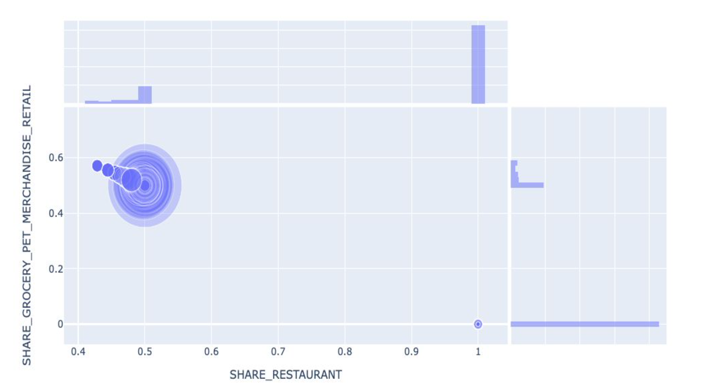

Customer segmentation
In this project, a customer segmentation based on the consumption behaviour was provided to the marketing team of an online delivery service.
This was one of the first data analyst projects I conducted and while I don't think it's technically very advanced and interesting,
I like to have a look at it to display the progress made so far.
The Dataset consisted of users who have registered to an online delivery service during September 2019 and either have or
have not made orders during the time from then and October 2020.
The task was to explore the dataset and to generate meaningful insights for the marketing team that help
activate different types of users and a corresponding user segmentation.
The main KPI was to increase amount of orders placed per customer.
Inspecting the heatmap, led me to find a strong correlation between the amount of purchases per user and the relative amount of orders at restaurants in relation to other services. Inspecting this closer, there seemed to be a critical difference between users placing less than 6 orders and users placing more than 6 orders, in that the latter ones did not only order from restaurants, but also from grocery and retailer stores. As was not the case of the other user types.

The classification was made based on this cut-off point. With the amount of orders being the core metric to improve,
I classified:
- Inactive users (0 orders)
- Low-activity users (< 6 orders per year)
- High-activity users (>= 6 orders per year)
While only representing 16% of the users, high-activity users make up 74% of the revenue.
Converting only 10% of low-activity users to high-activity users would result in a revenue increase of slightly less than 20% of the current revenue (~0.4 mio. Euro).
The main insight for the marketing team was therefore, that targetting low-activity users yields the most potential
for revenue gains. Consequently, characterstics of these three user groups were carved out, with suggestions for the marketing team
on how to target each of them. One of the main advices was to inform low-activity users about the grocery and retailer delivery
option, as this was the main differentiating factor to the high-activity users.
Thank you for the interest in this project. Feel free to inspect the github repository here.